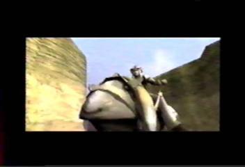
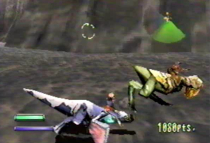
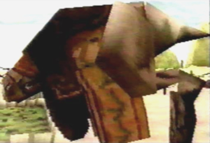
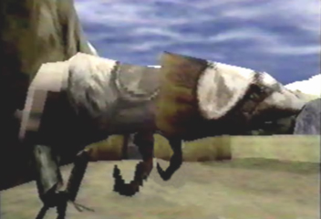
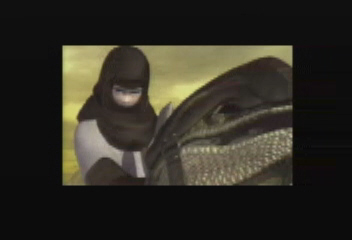
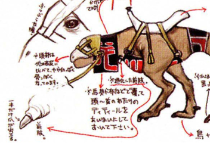

Lets start with the Coolias found in Panzer Dragoon‘s intro sequence. As Kyle and his hunting team ride across the vast terrain, we get a clear view of the Coolia’s appearance. The Coolia’s head is quite big and round. It’s nostrils are also considerably large and connected. Each of its two eyes are small and circular . Lastly, we can also see it has two sets of arms, short in length as well as a small, thin, protruding tail. With a good picture of the Coolias from Panzer Dragoon, we move on to the Coolias in Panzer Dragoon Zwei.
From viewing Panzer Dragoon Zwei’s intro sequence,
It’s pretty safe to say the Coolia’s appearance hasn’t
changed much from the first game. In actual game play, this however,
is a different story. In Episode 2 as you shoot down the caravan tents,
a Coolia and rider will emerge, running for their lives. Looking at
the Coolia closely, you will notice its tail is no longer short and
thin, but short, stubby, and fat! Another thing to point out is the
Coolia’s skin color is no longer gray, but green. I’ve also
made the observation that it doesn’t even have its two sets of
arms. Whether this is a different type of Coolia from the ones seen
in the intro sequence, is not known. With this in mind, we move on to
Panzer Dragoon Saga.
In Panzer Dragoon Saga as you enter the traveling caravan, you will find a lone Coolia indulging itself with Junio Seeds. This Coolia has a much smaller head than the Coolias found in PD and PDZ. It also has two separate nostrils rather than one connected, large nostril. Its tail is also short and pointy. While visiting the Liberal District in the Town of Zoah, you will eventually find another Coolia walking around near Aldo’s house. While the first Coolia at the caravan appeared more mamal-like in appearance, this one seems to look more reptile-like in appearance. In the ending movie, we also see Gash and Azel riding another variation of this reptile-like Coolia throughout the desert. Our final Coolia observations bring us to Panzer Dragoon Orta.
In Panzer Dragoon Orta, If you have a good eye and look
closely, you will see Coolias stationed amongst the Seekers in Episode
1. This most certainly is not the best way to observe them. Within Pandora’s
Box after selecting the Encyclopedia, you will find a section called
"Creatures". Listed under Mutated monsters, we are able to
view info about the Coolia. We learn that aside from farming uses, the
Coolias in PDO haven’t changed much and are still used for ground
travel. Seeing how their purpose hasn’t changed, it’s apparently
obvious its appearance has changed even more considerably, since PDS.
It’s a shame we can’t zoom up on it more closely, but it’s
close enough for us to be able to notice some major changes. Just like
the PDZ Coolia, it appears that the Orta Coolia, has also lost its short
stubby arms. Its tail is now very thin and long, closely resembling
the Coolias from PD. Lastly, the most extreme change I must point out,
is its beak-like mouth. Now the Coolia has bird-like features as well
as reptilian features! So this begs me to ask the question: Are there
different species of Coolia?
One theory might suggest that Coolias in different
parts of the Panzer Dragoon world , or different climates, may have
evolved differently through natural selection, to adapt to their different,
harsh, environments. The Coolia from PDZ found in Episode 2, no longer
needing its short stubby arms, could have evolved to do away with such
useless appendages. The reptile-like Coolias from PDS having to constantly
traverse harsh deserts, would have evolved dry scaly skin, which in
turn would allow them to live in such a dry environment. The Coolias
from PDO could have evolved a beak-like mouth for the purpose of breaking
open the shells of seeds and nuts. This is also very similar to how
Darwin’s Finches on the island of Galapagos, supposedly evolved
different sized beaks to break open various kinds of hard shells. After
PDS the environment drastically changed. The PDO Coolias might have
needed to feed on a different food source other than Junio Seeds. If
the shells of these new seeds were harder to break open than those of
Junio Seeds, it might have evolved a beak-like mouth to crack them open!
Another more plausible theory would be that Team Andromeda
kept changing the Coolia design ever so slightly, therefore making its
appearance inconsistent with each new game. However you look at it,
there are at least two types of Coolia in the Panzer Dragoon world:
Mamal-like and Reptile-like. I have the pics to prove it! Whether it
be two separate species, or the act of evolution and natural selection,
the constant change of the Coolia’s appearance over the course
of the Panzer Dragoon series must not be overlooked, but closely taken
into consideration.
Sources:

Coolias from PD have a large round head.

This Coolia from PDZ EP 2, has a short stubby tail, and no arms.

A mamal-like Coolia from the caravan in PDS.

A reptile-like Coolia from the Liberal District in PDS.

Azel rides another variation of the reptile-like Coolia in the ending sequence.

The Coolia from PDO has a beak-like mouth!

This official artwork from PDO clearly shows that the Orta Coolia's short arms have evolved into tiny stubs. Does this prove my Coolia evolution theory to be fact?